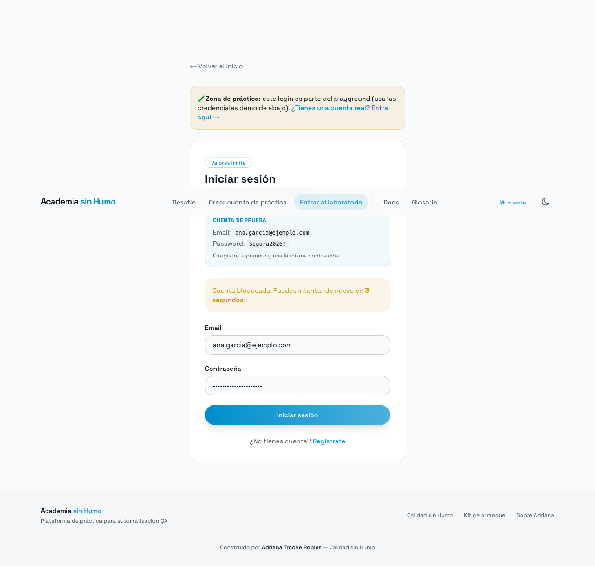

Bug 1: Bloqueo activado en el intento 4 (esperado: después del 5º)
Pasos para reproducir
- Usar cuenta demo ana.garcia@ejemplo.com
- Enviar contraseñas incorrectas consecutivamente
- Observar en qué intento aparece el bloqueo
Datos de prueba (valores límite)
Intentos hasta bloqueo: 4 Límite spec: 5 intentos
Esperado
Bloqueo tras exactamente 5 intentos fallidos consecutivos.
Actual
Bloqueo detectado en intento #4. Error: "Demasiados intentos fallidos. Cuenta bloqueada por 30 segundos."
Evidencia
